토목기사 (2008-05-11 기출문제)
1과목: 응용역학
1. 기둥의 중심에 축방향으로 연직 하중 P = 120t 이, 기둥의 횡방향으로 풍하중이 역삼각형 모양으로 분포하여 작용할 때 기둥에 발생하는 최대 압축응력은?
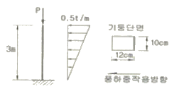
- 375kg/cm2
- 625kg/cm2
- 1,000kg/cm2
- 1,625kg/cm2
(정답률: 49%)

2. 단순보의 단면이 아래 그림과 같을 대 단면계수는 약 얼마인가?
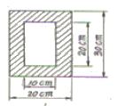
- 2333cm3
- 2556cm3
- 38333cm3
- 45000cm3
(정답률: 57%)
3. B점의 수직변위가 1이 되기 위한 하중의 크기 P는? (단, 부재의 축강성은 EA로 동일하다.)
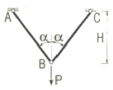
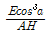
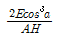
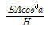
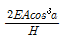
(정답률: 88%)
4. 그림과 같은 보의 단면이 2.7tㆍm의 휨모멘트를 받고 있을 때 중립축에서 10cm 떨어진 점의 휨응력은 얼마인가?
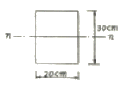
- 60 kg/cm2
- 75 kg/cm2
- 80 kg/cm2
- 95 kg/cm2
(정답률: 54%)
5. 단순보 AB위에 그림과 같은 이동하중이 지날 때 C점의 최대 휨모멘트는?
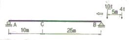
- 98.8 tㆍm
- 94.2 tㆍm
- 80.3 tㆍm
- 74.8 tㆍm
(정답률: 65%)
6. 그림과 같이 밀도가 균일하고 무게가 W인 구(球)가 마찰이 없는 두 벽면 사이에 놓여 있을 때 반력 RA의 크기는?
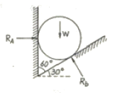
- 0.500W
- 0.577W
- 0.707W
- 0.866W
(정답률: 87%)
7. 다음 연속보에서 B점의 지점 반력을 구한 값은?
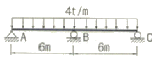
- 24t
- 28t
- 30t
- 32t
(정답률: 57%)
8. 다음 봉재의 단면적이 A이고 탄성계수가 E일 때 C점의 수직 처짐은?
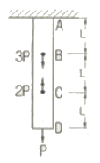
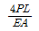
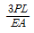
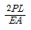
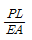
(정답률: 69%)
9. 단순보의 D점에 10t의 하중이 작용할 때 C점의 처짐량이 0.5cm 라하면 아래 그림과 같은 경우 D점의 처짐량을 구하면?
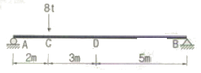
- 0.2cm
- 0.3cm
- 0.4cm
- 0.5cm
(정답률: 53%)
10. 다음 구조물에 생기는 최대 부모멘트의 크기는? (단, C점의 내부힌지가 있는 구조물이다.)
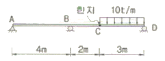
- -11.3 tㆍm
- -15.0 tㆍm
- -30.0 tㆍm
- -45.0 tㆍm
(정답률: 77%)
11. 정정구조의 라멘에 분포하중 w가 작용시 최대 모멘트를 구하면?
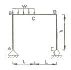
- 0.186wL2
- 0.216wL2
- 0.250wL2
- 0.281wL2
(정답률: 60%)
12. 그림과 같은 구조물에서 A점의 휨모멘트의 크기는?
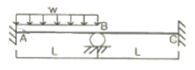
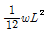
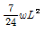
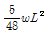
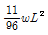
(정답률: 57%)
13. 그림과 같이 균일한 단면을 가진 캔틸레버보의 자유단에 집중하중 P가 작용한다. 보의 길이가 L일 때 자유단의 처짐이 △라면, 처짐이 4△가 되려면 보의 길이 L은 약 몇배가 되어야 하는가?
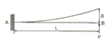
- 1.6배
- 1.8배
- 2.0배
- 2.2배
(정답률: 76%)
14. 다음과 같은 힘이 작용할 때 생기는 전단력도의 모양은 어떤 형태인가?
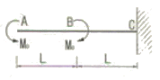
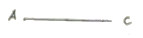
(정답률: 77%)
15. 그림과 같이 이축응력(이축응력)을 받고 있는 요소의 체적 변형율은? (단, 탄성계수 E=2×106kg/cm2, 프와송비 v=0.3)
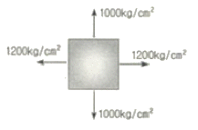
- 3.6×10-4
- 4.0×10-4
- 4.4×10-4
- 4.8×10-4
(정답률: 70%)
16. 그림과 같은 T형 단면을 가진 단순보가 있다. 이 보의 지간은 3m이고, 지점으로부터 1m 떨어진 곳에 하중 P=450kg이 작용하고 있다. 이 보에 발생하는 최대전단응력은?
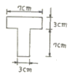
- 14.8 kg/cm2
- 24.8 kg/cm2
- 34.8 kg/cm2
- 44.8 kg/cm2
(정답률: 64%)
17. 다음 4가지 종류의 기둥에서 강도의 크기순으로 옳게 된 것은? (단, 부재는 등질 등단면이고 길이는 같다.)
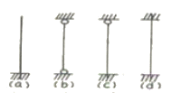
- (a)>(b)>(c)>(d)
- (a)>(c)>(b)>(d)
- (d)>(b)>(c)>(a)
- (d)>(c)>(b)>(a)
(정답률: 78%)
18. 그림과 같은 트러스의 사재 D의 부재력은?
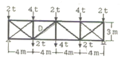
- 5 ton(인장)
- 5 ton(압축)
- 3.75 ton(인장)
- 3.75 ton(압축)
(정답률: 77%)
19. 그림과 같은 내민보에서 C점의 휨 모멘트가 영(零)이 되게 하기 위해서는 x가 얼마가 되어야 하는가?
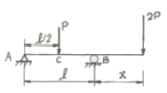
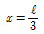
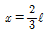
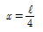
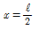
(정답률: 76%)
20. 그림과 같이 원(D=40cm)과 반원(r=40cm)을 이루어진 단면의 도심거리 y값은?
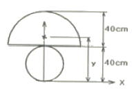
- 17.58cm
- 17.98cm
- 49.48cm
- 44.65cm
(정답률: 76%)
2과목: 측량학
21. 하천측량에서 수면으로부터 수심의 2/10, 4/10, 6/10, 8/10 되는 곳에서 유속을 측정한 경과 각각 0.662m/sec, 0.660m/sec, 0.597m/sec, 0.464m/sec였다. 이때의 평균 유속이 0.566m/sec 였다면 평균유속을 계산한 방법은?
- 1점법
- 2점법
- 3점법
- 4점법
(정답률: 67%)
22. 축척 1:5000의 지형측량에서 등고선을 그리기 위한 측점의 높이 오차가 0.2m였다. 그 지점의 경사각이 1° 일 때 그 지점을 지나는 등고선의 도상 평면 위치 오차는?
- 3.5mm
- 2.3mm
- 1.9mm
- 1.2mm
(정답률: 50%)
23. 다음 중 평판측량의 후방교회법을 옳게 설명한 것은?
- 하나의 구하려고 하는 점에 평판을 세워 2개 이상의 기지점을 이용하여 그 점의 위치를 결정하는 방법
- 하나의 기지점과 하나의 구하려고 하는 점에 평판을 세워 그 점의 위치를 결정하는 방법
- 두 개의 기지점에 평판을 세워 하나의 구하려고 하는 점의 위치를 결정하는 방법
- 세 개의 기지점에 평판을 세우 구하려고 하는 점의 위치를 결정하는 방법
(정답률: 34%)
24. 축척 1:50000의 도상에서 어떤 토지개량구역의 면적을 구한 결과가 40.52cm2이었다면 이 구역의 실 면적은?
- 10.13 ㎢
- 8.10 ㎢
- 2.03 ㎢
- 1.62 ㎢
(정답률: 45%)
25. 초점거리 20cm의 카메라로 평지로부터 6000m의 촬영고도로 찍은 연직 사진이 있다. 이 사진상에 찍혀 있는 평균 표고 500m인 지형의 사진 축척은?
- 1:27000
- 1:27500
- 1:28000
- 1:28500
(정답률: 64%)
26. 지구반경 r=6370km이고 거리의 허용오차가 1/105이면 직경 몇 km 까지를 평면측량으로 볼 수 있는가?
- 69.78 km
- 34.89 km
- 64.27 km
- 36.67 km
(정답률: 56%)
27. 다음은 교호수준측량의 결과이다. A점의 표고가 10m일 때 B점의 표고는?
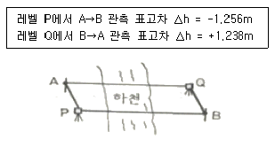
- 11.247m
- 11.238m
- 9.753m
- 8.753m
(정답률: 63%)
28. 다각측량을 한 결과가 다음과 같을 때 다각형의 면적은?
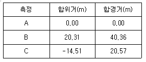
- 약 467 m2
- 약 494 m2
- 약 502 m2
- 약 536 m2
(정답률: 54%)
29. 클로소이드의 매개변수 A=60m인 클로소이드(clothoid) 곡선 상의 시점으로부터 곡선길이(L)가 30m일 때 반지름(R)은?
- 60m
- 90m
- 120m
- 150m
(정답률: 62%)
30. 완화곡선에 대한 설명으로 틀린 것은?
- 완화곡선의 접선은 시점에서 원호에, 종점에서 직선에 접한다.
- 곡선 반지름은 완화곡선의 시점에서 무한대, 종점에서 원곡선의 반지름이 된다.
- 완화 곡선에 연한 곡선 반지름의 감소율은 칸트의 증가율과 같다.
- 종점에 있는 칸트는 원곡선의 칸트와 같게 된다.
(정답률: 74%)
31. 지형을 표시하는 방법 중에서 짧은 선으로 지표의 기복을 나타내는 방법은?
- 점고법
- 단채법
- 영선법
- 등고선법
(정답률: 69%)
32. 다음 그림과 같이 도로의 횡단면도에서 절토 단면적은? (단, 0을 원점으로 하는 좌표(x, y)의 단위:[m])
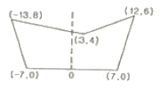
- 94m2
- 98m2
- 102m2
- 106m2
(정답률: 75%)
33. 다음 중 노선측량에서 단곡선의 설치방법에 대한 설명 중 옳지 않은 것은?
- 중앙종거를 이용한 설치방법은 터널 속이다 삼림지대에서 벌목량이 많을 때 사용하면 편리하다.
- 편각설치법은 가장 정확도가 좋고 정밀한 결과를 얻을 수가 있기 때문에 철도나 기타 중요한 곳에 많이 사용된다.
- 접선편거와 현편거에 의하여 설치하는 방법은 테이트만을 사용하여 원곡선을 설치할 수 있다.
- 장현에 대한 종거와 횡거에 의하는 방법은 곡률반경이 짧은 곡선일 때 편리하다.
(정답률: 41%)
34. 120m의 측선을 30m 줄자로 관측하였다. 1회 관측에 따른 정오차는 +3mm, 우연오차는 ±3mm였다면, 이 줄자를 이용한 관측거리는?
- 120.000±0.006m
- 120.006±0.006m
- 120.012±0.006m
- 120.012±0.012m
(정답률: 73%)
35. 우리나라 기본측량에 있어서 삼각 및 삼변측량을 실시하는 최종 목적은 무엇인가?
- 각 변의 길이를 산출하기 위한 것이다.
- 삼각형의 면적을 산출하기 위한 것이다.
- 기준점의 위치를 결정하기 위한 것이다.
- 삼각현의 내각을 산출하기 위한 것이다.
(정답률: 61%)
36. 점, 선, 연 또는 입체적 특성을 갖는 자료를 공간적 위치 기준에 맞추어 다양한 몾적과 형태로서 분석, 처리할 수 있는 최신 정보체계는?
- DTM(Digital Terrain Model)
- GIS(Geographic Information System)
- GPS(Global Positioning System)
- WGS(World Geodetic System)
(정답률: 73%)
37. 키가 1.80m인 사람이 바닷가의 해수면 상에서 해수면을 바라볼 수 있는 수평선의 거리는 약 얼마인가? (단, 지구의 곡율반경=6370km, 공기의 굴절계수=0.14)
- 3160m
- 5160m
- 7160m
- 9160m
(정답률: 55%)
38. 다음 좌표계의 설명 중 틀린 것은?
- 지평좌표계는 관측자를 중심으로 천체의 위치를 간략하게 표시할 수 있다.
- 지구좌표계는 측지경위도좌표, 평면직교좌표, UTM좌표 등이 있다.
- 적도좌표계는 지구공전궤도면을 기준으로 한다.
- 태양계 내의 천체운동을 설명하는 데에는 황도좌표계가 편리하다.
(정답률: 46%)
39. 캔트(cant)의 계산에서 속도 및 반지름을 2배로 하면 캔트는 몇 배가 되는가?
- 2배
- 4배
- 8배
- 16배
(정답률: 74%)
40. 다각측량에서 200m에 대한 거리관측의 오차가 ±2mm이었을 때 이와 같은 정밀도의 각관측 오차는?
- ±2°
- ±4°
- ±6°
- ±8°
(정답률: 62%)
3과목: 수리학 및 수문학
41. 지름이 20cm인 A관에서 지름이 10cm인 B관으로 축소되었다가 다시 지름이 15cm인 C관으로 단면이 변화되었다. B관의 평균유속이 3m/sec일 때 A관과 C관의 유속은? (단, 유체는 비압축성이다.)
- A관의 VA=1.50m/sec, C관의 Vc=2.00m/sec
- A관의 VA=1.00m/sec, C관의 Vc=1.33m/sec
- A관의 VA=0.75m/sec, C관의 Vc=1.33m/sec
- A관의 VA=1.50m/sec, C관의 Vc=0.75m/sec
(정답률: 60%)
42. 물이 단면적, 수로의 재료 및 동수경사가 동일한 정사각형관과 원관을 가득차서 흐를 때 유량비
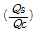
는? (단, Qs:정사각형관의 유량, Qc:원관의 유량, Manning 공식을 적용)- 0.645
- 0.923
- 1.083
- 1.341
(정답률: 58%)
43. 다음 중 누가우량곡선(rainfall mass curve)의 특성으로 옳은 것은?
- 누가우량곡선은 자기우량기록에 의하여 작성하는 것보다 보통우량계의 기록에 의하여 작성하는 것이 더 정확하다.
- 누가우량곡선의 경사는 지역에 관계없이 일정하다.
- 누가우량곡선의 경사가 클수록 강우강도가 크다.
- 누가우량곡선으로부터 일정기간 내의 강우량을 산출하는 것은 불가능하다.
(정답률: 64%)
44. 유체가 75mm 직경인 관로를 흘러서 150mm 직경인 큰 관으로 연결되어 유출된다. 75mm 관로에서의 Reynolds수가 20,000일 때 150mm 관로의 Reynolds수는?
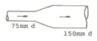
- 40,000
- 20,000
- 10,000
- 5,000
(정답률: 54%)
45. 오리피스에서 Cd를 수축계수, Cv를 유속계수라 할 때 실제유량과 이론유량과의 비(C)는?
- C=CcㆍCv
- C=Cc/Cv
- C=Cv
- C=Cc
(정답률: 59%)
46. 우물에서 장기간 양수를 한 후에도 수면강하가 일어나지 않는 지점까지의 우물로부터 거리(범위)를 무엇이라 하는가?
- 용수효율권
- 대수층권
- 수류영역권
- 영향권
(정답률: 65%)
47. 그림과 같이 유량이 Q, 유속이 V인 유관이 받는 외력 중에서 y축 방향의 힘(Fy)에 대한 계산식으로 맞는 것은? (단, ρ:단위밀도, θ1 및 θ2≤90°, 마찰력은 무시함)
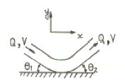
- Fy=ρQV(sinθ2-sinθ1)
- Fy=-ρQV(sinθ2-sinθ1)
- Fy=ρQV(sinθ2+sinθ1)
- Fy=-QV(sinθ2+sinθ1)/ρ
(정답률: 59%)
48. 다음 중 상류(Subcritical flow)에 관한 설명 중 틀린 것은?
- 하천의 유속이 장파의 전파속도보다 느린 경우이다.
- 관성력이 중력의 영향보다 더 큰 흐름이다.
- 수심은 한계수심보다 크다.
- 유속은 한계유속보다 작다.
(정답률: 57%)
49. 정상류(steady flow)의 정의로 가장 적합한 것은?
- 한 점에서 수리학적 특성이 시간에 따라 변화하지 않는 흐름
- 어떤 순간에 가까운 점들의 수리학적 특성이 흐름의 상태와 같아지는 흐름
- 수리학적 측성이 시간에 따라 점차적으로 흐름의 상태와 같이 변화하는 흐름
- 어떤 구간에서만 수리학적 특성과 흐름의 상태가 변화하는 흐름
(정답률: 72%)
50. 물속에 세운 모세관의 내경을 d, 그때의 물의 표면장력을 σ, 물과 관 사이의 접촉각을 θ라고 할 때 모세관고 h를 구하는 식은? (단, 물의 단위 중량은 w이다.)
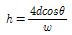
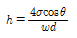
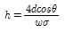
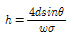
(정답률: 70%)
51. 유출을 구분하면 표면유출(A), 중간유출(B) 및 지하수유출(C)로 구분 할 수 있다. 또한 중간유출을 조기지표하(早期地表下)유출(B1)과 지연지표화(地緣地表下)유출(B2)로 구분할 때 직접(直接)유출로 옳은 것은?
- (A) + (B) +(C)
- (A) + (B1)
- (A) + (B2)
- (A) + (B)
(정답률: 43%)
52. 직사각형 위어의 월류수심이 25cm에 대하여 측정오차 5mm가 발생하였다. 이때 유량에 미치는 오차는?
- 4%
- 3%
- 2%
- 1%
(정답률: 43%)
53. 수심이 10cm, 수로폭은 20cm인 직사각형의 실험 개수로에서 유량이 80cm3/sec 로 흐를 때 이 흐름의 종류는? (단, 물의 동점성계수(ν)=1.15×10-2cm2/sec이다.)
- 층류(層流), 상류(常流)
- 층류(層流), 사류(射流)
- 난류(亂流), 상류(常流)
- 난류(亂流), 사류(射流)
(정답률: 60%)
54. 다음 중 단위도의 이론적 근거가 되는 가정이 아닌 것은?
- 강우의 시간적 균일성
- 강우의 공간적 균등성
- 유역특성의 시간적 불변성
- 유역의 비선형성
(정답률: 45%)
55. DAD 해석에 관계되는 요소로 짝지어진 것은?
- 수심, 하천 단면적, 홍수기간
- 강우깊이, 면적, 지속기간
- 적설량, 분포면적, 적설일수
- 강우량, 유수단면적, 최대수심
(정답률: 59%)
56. 체적이 8m3, 중량이 4 ton 인 액체의 비중은 얼마인가?
- 3
- 2
- 1
- 0.5
(정답률: 60%)
57. 면적이 400m2인 여과지의 동수경사가 0.⑤ 이고 여과량이 2m3/sec 이면 이 여과지의 투수계수는 얼마인가?
- 1 cm/sec
- 4 cm/sec
- 5 cm/sec
- 10 cm/sec
(정답률: 48%)
58. 20m×20m의 직사각형 선박의 중앙에 트럭을 실었을 때 1.0cm 만큼 가라 않았다. 이 트럭의 무게는? (단, 해수의 비중은 1.025 이다.)
- 4.1 ont
- 5.1 ont
- 6.1 ont
- 7.1 ont
(정답률: 42%)
59. 다음 중에서 총강우량과 손실량을 분리하는 방법은?
- ∅ - 지표법
- 지하수 감수 곡선법
- 수평직선 분리법
- 수정 N-day 법
(정답률: 68%)
60. 다음 중 배수곡선(backwater curve)에 해당하는 수면곡선은?
- 댐을 월류할 때의 수면곡선
- 홍수시의 하천의 수면곡선
- 하천 단락부(段落部)상류의 수면곡선
- 상류 상태로 흐르는 하천에 댐을 구축했을 때 저수지의 수면곡선
(정답률: 65%)
4과목: 철근콘크리트 및 강구조
61. 철근콘크리트 부재의 최소 피복두께에 관한 설명 중 틀린 것은?(오류 신고가 접수된 문제입니다. 반드시 정답과 해설을 확인하시기 바랍니다.)
- 흙에 접하거나 옥외의 공기에 직접 노출되는 현장치기 콘크리트로 D25 이하의 철근을 사용하는 경우 최소 피복두께는 50mm 이다.
- 옥외의 공기나 흙에 직접 접하지 않는 현장치기 콘크리트로 슬래브에 D35 이하의 철근을 사용하는 경우 최소 피복두께는 40mm이다.
- 흙에 접하거나 옥외의 공기에 직접 노출되는 프리캐스트 콘크리트로 벽체에 D35 이하의 철근을 사용하는 경우 최소 피복두께는 20mm 이다.
- 흙에 접하거나 옥외의 공기에 직접 노출되는 프리스트레스트 콘크리트로 벽체인 경우 최소 피복두께는 30mm 이다.
(정답률: 47%)
62. 직사각형보(bw=300mm, d=550mm)에서 콘크리트가 부담할 수 있는 공칭 전단강도는? (단, fck=24MPa)
- 639.2 kN
- 741.5 kN
- 968.3 kN
- 134.7 kN
(정답률: 55%)
63. 비틀림 철근에 대한 설명 중 옳지 않은 것은?(단, Pn : 가장 바깥의 횡방향 폐쇄스터럽 중심선의 둘레 mm)(오류 신고가 접수된 문제입니다. 반드시 정답과 해설을 확인하시기 바랍니다.)
- 비틀림철근의 설계기준항복강도는 400MPa을 초과해서는 안된다.
- 횡방향 비틀림 철근의 간격은 ρh/8과 300mm 중 작은값이하라야 한다.
- 비틀림에 요구되는 종방향 철근은 폐쇄스터럽의 둘레를 따라 300mm 이하의 간격으로 분포시켜야 한다.
- 스터럽의 각 모서리에 최소한 세개이상의 종방향철근을 두어야 한다.
(정답률: 46%)
64. 아래 그림과 같은 프리스트레스트 콘크리트에서 직선으로 배치된 긴장재는 유효 프리스트레스 힘 1⑤0kN로 긴장되었다. fck=30MPa일 때 보의 균열모멘트(Mcr)는 약 얼마인가?
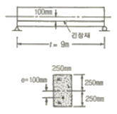
- 327 kNㆍm
- 228 kNㆍm
- 147 kNㆍm
- 97 kNㆍm
(정답률: 32%)
65. 콘크리트구조설계기준에서 규정하고 있는 최소 전단철근 및 전단철근의 강도에 대한 설명으로 옳은 것은? (단, bw는 복부폭, s는 전단철근간격 이다.)
- 최소 전단철근은 경사균열폭이 확대되는 것을 억제함으로써 사인장응력에 의한 콘크리트의 취성파괴를 방지하기 위한 것이다.)
- 전단철근의 최대 전단강도(Vs)는
 이하로 하여야 한다.
이하로 하여야 한다. - 최소 전단철근은 모든 철근콘크리트 휨부재에 배치하여야 한다.
- 전단철근의 설계기준항복강도는 300MPa를 초과할 수 없다.
(정답률: 41%)
66. 복진단 고장력 볼트(bolt)의 마찰이음에서 강판에 P=350kN이 작용할 때 볼트의 수는 최소 몇 개가 필요한가? (단, 볼트의 지름 d=20mm이고, 허용전단응력 τa=120MPa)
- 3개
- 5개
- 8개
- 10개
(정답률: 55%)
67. 단철근 직사각형보에서 균형파괴의 단면이 되기 위한 중립 축 위치 c와 유효높이 d의 비는 얼마인가? (단, fck=21MPa, fy=350MPa, b=360mm, d=700mm)
- c/d=0.51
- c/d=0.63
- c/d=0.43
- c/d=0.72
(정답률: 59%)
68. 아래와 같은 맞대기 이음부에 발생하는 응력의 크기는? (단, P=360kN, 강판두께 12mm)
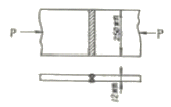
- 압축응력 fc=14.4MPa
- 인장응력 ft=3000MPa
- 전단응력 τ=150MPa
- 압축응력 fc=120MPa
(정답률: 60%)
69. 철근콘크리트가 성립하는 이유에 대한 설명으로 잘못된 것은?
- 철근과 콘크리트와의 부착력이 크다.
- 콘크리트 속에 묻힌 철근은 녹슬지 않고 내구성을 갖는다.
- 철근과 콘크리트의 무게가 거의 같고 내구성이 같다.
- 철근과 콘크리트는 열데 대하 팽창계수가 거의 같다.
(정답률: 56%)
70. 철근콘크리트 구조에서 연속보 또는 1방향 슬래브는 다음 조건을 모두 만족하는 경우에만 콘크리트 구조설계기준에서 제안된 근사해법을 적용할 수 있다. 그 조건에 대한 설명으로 잘못된 것은?
- 2경간 이상이어야 하며, 인접 2경간의 차이가 짧은 경간의 20% 이하인 경우
- 등분포 하중이 작용하는 경우
- 활화중이 고정하중이 3배를 초과하는 경우
- 부재의 단면 트기가 일정한 경우
(정답률: 46%)
71. 포스트텐션 부재에 강선을 단면(200mm×300mm)의 중심에 배치하여 1500MPa으로 긴장하였다. 콘크리트의 크리프로 인한 강선이 프리스트레스 손실율은 약 얼마인가? (단, 강선의 단면적 Aps=800mm2, n=6, 크리프 계수는 2.0)
- 9%
- 16%
- 22%
- 27%
(정답률: 33%)
72. 프리스트레스트 콘크리트를 사용하는 가장 큰 이점은 다음중 무엇인가?
- 고강도 콘크리트의 이용
- 고강도 강재의 이용
- 콘크리트의 균열 감소
- 변형의 감소
(정답률: 39%)
73. 전단철근이 부담하는 전단력 Vs=150kN일 때, 수직스터럽으로 전단보강을 하는 경우 최대 배치간격은 얼마 이하인가? (단, fck=28MPa, 전단철근 1개 단면적=125mm2, 횡방향 철근의 설계기준항복강도(fyt)=400MPa, bw=300mm, d=500mm)
- 600mm
- 333mm
- 250mm
- 167mm
(정답률: 39%)
74. D29철근이 배근된 휨부재에서 fck=21MPa, fy=300MPa을 사용한다면, 인장철근의 기본정착길이는? (단, D29철근의 공칭지름 28.6mm, 공칭단면적 642mm2임)
- 745.5 mm
- 819.2 mm
- 1012.5 mm
- 1123.4 mm
(정답률: 49%)
75. 슬래브와 보가 일체로 타설된 비대칭 T형보(반 T형보)의 유효폭은 얼마인가? 9단, 플랜지 두께=100mm, 복부폭=300mm, 인접보와의 내측거리=1600mm, 보의 경간=6.0m)
- 800mm
- 900mm
- 1000mm
- 1100mm
(정답률: 53%)
76. 다음은 철근콘크리트 구조물의 피로에 대한 안정성 검토에 관한 설명이다. 옳지 않은 것은?
- 하중 중에서 변동하중이 차지하는 비율이 큰 부재는 피로에 대한 안정성 검토를 하여야 한다.
- 보나 슬래브의 피로는 휨 및 전단에 대하여 검토하여야 한다.
- 일반적으로 기둥의 피로는 검토하지 않아도 좋다.
- 피로에 대한 안정성 검토시에는 활하중의 충격은 고려하지 않는다.
(정답률: 52%)
77. 지름 450mm인 원형 단면을 갖는 중심축하중을 받는 나선 철근 기둥에 있어서 강도 설계법에 의한 축방향 설계강도(∅Pn)는 얼마인가? (단, 이 기둥은 단주이고, fck=27MPa, fy=350MPa, Ast=8-D22=3096mm2, ∅=0.7 이다.)
- 1166 kN
- 1299 kN
- 2425 kN
- 2774 kN
(정답률: 67%)
78. 그림과 같은 정사각형 독립확대 기초 저면에 작용하는 지압력이 q=100kPa일 때 휨에 대한 위험단면의 휨모멘트 강도는 얼마인가?
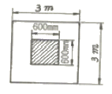
- 216 kNㆍm
- 360 kNㆍm
- 260 kNㆍm
- 316 kNㆍm
(정답률: 64%)
79. 단철근 직사각형보에서 fck=32MPa 이라면 압축응력의 등가 높이 a=β1ㆍc에서 계수 β1은 얼마인가? (단, c는 압축연단에서 중립축까지의 거리이다.)
- 0.850
- 0.836
- 0.822
- 0.815
(정답률: 58%)
80. 정착구와 커플러의 위치에서 프리스트레싱 도입 직후 포스트텐션 긴장재의 허용응력은 최대 얼마인가? (단, fpu는 긴장재의 설계기준인장강도)
- 0.6fpu
- 0.7fpu
- 0.8fpu
- 0.9fpu
(정답률: 66%)
5과목: 토질 및 기초
81. 점토광물에서 점토입자의 동형치환(同形置換)의 결과로 나타나는 현상은?
- 점토입자의 모양이 변화되면서 특성도 변하게 된다.
- 점토입자가 음(-)으로 대전된다.
- 점토입자의 풍화가 빨리 진행된다.
- 점토입자의 화학성분이 변화되었으므로 다른 물질로 변한다.
(정답률: 59%)
82. 모래시료에 대해서 압밀배수 삼축압축시험을 실시하였다. 초기 단계에서 구속응력(σ3)은 100kg/cm2이고, 전단파괴시에 작용된 축차응력(σdf)은 200kg/cm2이었다. 이와 같은 모래시료의 내부마찰각(∅) 및 파괴면에 작용하는 전단응력(τt)의 크기는?
- ∅=30°, τt=115.47kg/cm2
- ∅=40°, τt=115.47kg/cm2
- ∅=30°, τt=86.60kg/cm2
- ∅=40°, τt=86.60kg/cm2
(정답률: 56%)
83. 어떤 흙에 대해서 직접 전단시험을 한 결과 수직응력이 10kg/cm2일 때 전단저항이 5kg/cm2 이었고, 또 수직응력이 20kg/cm2일 때에는 전단저항이 8kg/cm2이었다. 이 흙의 점착력은?
- 2kg/cm2
- 3kg/cm2
- 8kg/cm2
- 10kg/cm2
(정답률: 48%)
84. Sand drain의 지배영역에 관한 Barron의 정삼각형 배치에서 샌드 드레인의 간격을 d, 유효원의 직경을 de라 할 때 de는 다음 중 어느 것인가?
- de=1.128d
- de=1.028d
- de=1.⑤0d
- de=1.50d
(정답률: 59%)
85. 보오링의 목적이 아닌 것은?
- 흐트러지지 않은 시료의 채취
- 지반의 토질 구성 파악
- 지하수위 파악
- 평판재하 시험을 위한 재하면의 형성
(정답률: 24%)
86. 말뚝이 20개인 군항기초에 있어서 효율이 0.75 이고, 단항으로 계산된 말뚝 한개의 허용 지지력이 15ton일 떄 군항의 허용지지력은 얼마인가?
- 112.5ton
- 225ton
- 300ton
- 400ton
(정답률: 43%)
87. 그림은 확대 기초를 설치했을 때 지반의 전단 파괴형상을 가정(Terzaghi의 가정)한 것이다. 다음 설명중 옳지 않은 것은?
- 전반전단(General Shear)일 때의 파괴형상이다.
- 파괴순서는 C-B-A이다.
- A영역에서 각 X는 수평선과
 의 각을 이룬다.
의 각을 이룬다. - C영역은 탄성영역이며 A영역은 수동영역이다.
(정답률: 52%)
88. 점토지반에 제방을 쌓을 경우 초기안정 해석을 위한 흙의 전단강도를 측정하는 시험방법으로 가장 적합한 것은?
- UU-test
- CU-test
- CD-test
(정답률: 61%)
89. 연약점토 사면이 수평과 75° 각도를 이루고 있고, 이 사면의 활동면의 형태는 아래 그림과 같다. 사면흙의 강도정수가 Cu=3.2t/m2, γt=1.763t/m3이고, β=75°일때의 안정수(m)는 0.219였다. 굴착할수 있는 최대깊이(Hcr)와 그림에서의 절토깊이를 3m까지 했을때의 안전율(Fs)은? (순서대로 Hcr, Fs)
- 2.10, 1.158
- 4.15, 2.316
- 8.3, 2.763
- 12.4, 3.200
(정답률: 46%)
90. 다음 그림에서 한계동수경사를 구하여 분사현상에 대한 안전율을 구하면? (단, 모래의 Gs=2.65, e=0.65이다.)
- 1.01
- 1.33
- 1.66
- 2.01
(정답률: 64%)
91. 압밀에 필요한 시간을 구할 때 이론상 필요하지 않는 항은 어느 것인가?
- 압밀층의 배수거리
- 유효응력의 크기
- 압밀계수
- 시간계수
(정답률: 52%)
92. 점성토 지반의 개량공법으로 타당하지 않는 것은?
- 치환공법
- 침투압 공법
- 바이브로 플로테이션 공법
- 고결공법
(정답률: 61%)
93. 토립자가 둥글고 입도분포가 양호한 모래지반에서 N치를 측정한 경과 N=19가 되었을 경우, Dunham의 공식에 의한 이 모래의 내부 마찰각 ∅는?
- 20°
- 25°
- 30°
- 35°
(정답률: 63%)
94. 그림과 같은 실트질 모래층에 지하수면 위 2.0m까지 모세관영역이 존재한다. 이때 모세관영역(높이 B의 바로 아래)의 유효응력은? (단, 실트질 모래층의 간극비는 0.50 비중은 2.67, 모세관 영역의 포화도는 60% 이다.)
- 2.67t/m2
- 3.67t/m2
- 3.87t/m2
- 4.67t/m2
(정답률: 35%)
95. 다짐효과에 대한 다음 설명중 옳지 않은 것은?
- 부착력이 증대하고 투수성이 감소한다.
- 전단강도가 증가한다.
- 상호간의 간격이 좁아져 밀도가 증가한다.
- 압축성이 커진다.
(정답률: 40%)
96. 3m×3m크기의 정사각형 기초의 극한지지력을 Terzaghi공식으로 구하면? (단, 지하수위는 기초바닥 깊이와 같다. 흙의 마찰각 20° 점착력 5t/m2, 습윤단위중량 1.7t/m2이고, 지하수위 아래 흙의 포화단위 중량은 1.9t/m2이다. 지지력계수 Nc=18, Nγ=5, Nq=7.5이다.)
- 147.9t/m2
- 123.1t/m2
- 153.9t/m2
- 133.7t/m2
(정답률: 34%)
97. 토질 종류에 따른 다짐 곡선을 설명한 것 중 옳지 않은 것은?
- 조립토가 세립토에 비하여 최대건조단위 중량이 크게 나타나고 최적함수비는 작게 나타난다.
- 조립토에서는 입도분포가 양호할수록 최대건조단위 중량은 크고 최적함수비는 작다.
- 조립토 일수록 다짐곡선은 완만하고 세립토 일수록 다짐 곡선은 급하게 나타난다.
- 점성토에서는 소성이 클수록 최대건조단위 중량은 감소하고 최적함수비는 증가한다.
(정답률: 58%)
98. 아래와 같은 흙의 입도분포곡선에 관한 설명으로 옳은 것은?
- A는 B보다 유효경이 작다.
- A는 B보다 균등계수가 작다.
- A는 B보다 균등계수가 크다.
- B는 C보다 유효경이 크다.
(정답률: 67%)
99. 다음 그림에서 옹벽이 받는 전주동토압은? (단, 지하 수위면은 지표면과 일치한다.)
- 65t/m
- 50t/m
- 35t/m
- 131t/m
(정답률: 36%)
100. 5m×10m의 장방향 기초위에 q=6t/m2의 등분포하중이 작용할 때, 지표면 아래 10m에서의 수직응력을 2:1법으로 구한 값은?
- 1.0t/m2
- 2.0t/m2
- 3.0t/m2
- 4.0t/m2
(정답률: 54%)
6과목: 상하수도공학
101. BOD5가 250mg/L 이고 COD가 446mg/L인 경우, 생물학적으로 분해되지 않는 COD는? (단, 탈산소계수 k1=0.1/day(밑수 10)임)
- 60mg/L
- 80mg/L
- 100mg/L
- 120mg/L
(정답률: 36%)
102. 수원에서 취수하는 계획취수량은 일반적으로 계획1일 최대 급수량의 몇 % 정도를 취수하는가?
- 90%
- 110%
- 130%
- 150%
(정답률: 54%)
103. 어떤 도시의 10년전 인구는 25만명, 현재의 일구는 50만명이다. 현재의 인구가 도시인구의 추정방법 중 등비급수법에 의한 인구증가를 보였다고 가정하면 연평균 인구 증가율(r)은 얼마인가?
- 0.072
- 0.093
- 1.064
- 1.085
(정답률: 47%)
104. 하수처리장에 적용하는 활성슬러지 공법에서늬 MLSS의 개념에 대한 설명으로 가장 알맞은 것은?
- 유입하수 중의 부유물질
- 폭기조 중의 부유물질
- 반송슬러지 중의 부유물질
- 방류수 중의 부유물질
(정답률: 50%)
1⑤. 하수관거에 유입되는 지하수 침투량을 결정함에 있어서의 주요 영향요소와 가장 거리가 먼 것은?
- 하수관거의 길이
- 하수관거의 재질
- 배수면적
- 토질과 지형
(정답률: 44%)
106. 하수내에 존재하는 질소성분을 제거하기 위한 방법 중 생물학적 처리 방법은?
- 질산화-탈질법
- 염소처리법
- 탈기방법
- 전기투석법
(정답률: 53%)
107. 펌프의 비속도(Ns)에 대한 설명으로 옳은 것은?
- Ns 값이 클수록 고양정 펌프이다.
- Ns 값이 클수록 토출량이 많은 펌프로 된다.
- Ns와 펌프 임펠러의 형상 및 펌프의 형식은 관계가 없다.
- 같은 토출량과 양정의 경우 Ns 값이 클수록 대형 펌프이다.
(정답률: 49%)
108. 우수량 계산시 이용하는 합리식에 대한 설명중 틀린 것은? (단, )
- Q는 유량을 나타내며 단위가 [m3/sec]이다.
- C는 유출계수를 나타낸다.
- I는 지표이 경사를 나타내며, 유입속도를 결정한다.
- A는 배수면적을 나타낸다.
(정답률: 65%)
109. 하수도 시설인 ‘빗물받이’에 관한 설명으로 틀린 것은?
- 빗물받이는 도로 옆의 물이 모이기 쉬운 장소나 L형 측구의 유하방향 하단부에 반드시 설치한다.
- 빗물받이는 횡단보도 및 가옥의 출입구 앞에 주로 설치하여 횽ㄹ을 높이는 것이 좋다.
- 빗물받이의 설치위치는 보도, 차도 구분이 있는 경우에는 그 경계에 설치한다.
- 빗물받이의 설치위치틑 보도, 차도 구분이 없는 경우에는 도로와 사유지이 경계에 설치한다.
(정답률: 40%)
110. 하수관거의 유속과 경사를 결정할 때 고려하여야 할 사항에 대한 설명으로 옳은 것은?
- 오수관거는 계획최대오수량에 대하여 유속을 최소 0.8m/sec로 한다.
- 우수관거 및 합류관거는 계획우수량에 대하여 유속을 최대 3.0m/sec로 한다.
- 유속은 일반적으로 하류방향으로 흐름에 따라 점차 작아지도록 한다.
- 오수관거, 우수관거 및 합류관거에서의 이상적인 유속은 2.0~2.5m/sec 정도이다.
(정답률: 59%)
111. 표준활성슬러지 처리법에 관한 설명으로 틀린 것은?
- HRT는 4~6시간을 표준으로 한다.
- MLSS농도는 1500~2500mg/L를 표준으로 한다.
- 포기장식은 전면포기식, 선회유식, 미세기포 분사식, 수중교반식 등이 있다.
- 포기조의 유효수심은 표준식의 경우, 4~6m를 표준으로 한다.
(정답률: 46%)
112. 상수의 오존 처리에 있어서의 장ㆍ단점에 대한 설명으로 잘못된 것은?
- 배오존처리설비가 필요하다.
- 염소화 반응으로 냄새를 유발하는 체놀류 등을 제거하는데 효과적이다.
- 전염소처리를 할 경우에 염소와 반응하여 잔류염소가 증가한다.
- 오존은 자체의 높은 산화력으로 염소에 비하여 높은 살균력을 가지고 있다.
(정답률: 67%)
113. 1일 물 공급량은 5000m3/day이다. 이 수량을 염소처리 하고자 60kg/day의 염소를 주입한 후 잔류염소 농도를 측정하였더니 0.2mg/L 이었을 때 염소요구량은?
- 7.6 mg/L
- 9.2 mg/L
- 11.8 mg/L
- 13.6 mg/L
(정답률: 42%)
114. 활성슬러지법과 비교하여 생물막법의 특징으로 옳지 않은 것은?
- 운전조작이 간단한다.
- 하수량 증가에 대응하기 쉽다.
- 반응조를 다단화 하여 반응효율과 처리안정성 향상이 도모된다.
- 생물종 분포가 단순하여 처리효율을 높일 수 있다.
(정답률: 57%)
115. 정수장 침전지에서 침전효율을 나타내는 기본적인 지표인 표면부하율(surface loading)에 대한 설명으로 옳은 것은?
- 유량이 클수록 표면부하율이 감소한다.
- 수심이 감소하면 표면부하율이 감소한다.
- 표면적이 클수록 표면부하율이 감소한다.
- 표면부하율은 가속도의 차원을 갖는다.
(정답률: 53%)
116. 상수 취수시설에 있어서 침사지의 유효수심은 얼마를 표준으로 하는가?
- 10~12m
- 6~8m
- 3~4m
- 0.5~2m
(정답률: 67%)
117. 상수도 시설기준에 의한 급수관을 분기하는 지점에서의 배수관 내 최소동수압은 얼마 이상 확보하여야 하는가?
- 100 kPa(약 1.02kgf/cm2)
- 150 kPa(약 1.53kgf/cm2)
- 500 kPa(약 5.10kgf/cm2)
- 700 kPa(약 7.10kgf/cm2)
(정답률: 49%)
118. 직경 400mm, 길이 1000m인 원형 철근콘크리트 관에 물이 가득차 흐르고 있다. 이 관로 시점의 수두가 50m라면 관로 종점의 수압은 몇 kg/cm2인가? (단, 손실구두는 마찰손실 수두만을 고려하며 마찰계수 (f)=0.⑤, 유속은 Manning식을 이용하여 구하고 조도계수(n)=0.013, 동수경사(I)=0.001 이다.)
- 2.92 kg/cm2
- 3.28 kg/cm2
- 4.83 kg/cm2
- 5.31 kg/cm2
(정답률: 30%)
119. 펌프의 특성 곡선(characteristic curve)은 펌프의 양수량(토출량)과 무엇들과의 관계를 나타낸 것인가?
- 비속도, 공동지수, 총양정
- 총양정, 효율, 축동력
- 비속도, 축동력, 총양정
- 공동지수, 총양정, 효율
(정답률: 69%)
120. 물의 용존산소(DO) 농도에 대한 설명으로 옳은 것은?
- 수온이 떨어지면 DO 농도는 증가한다.
- 오염된 물은 DO 농도가 높다.
- 기압이 낮을수록 DO농도가 증가한다.
- BOD가 클수록 DO농도가 증가한다.
(정답률: 40%)
기둥의 단면적은 π × (50cm)2 = 7,853.98cm2 이므로, 최대 압축응력은 120,000kg / 7,853.98cm2 = 15.28kg/cm2 이다.
하지만, 이 값은 단순히 축하중만 고려한 값이므로, 보통은 안전율을 고려하여 계산한다. 예를 들어, 안전율 4배를 적용한다면 최대 허용압축응력은 15.28kg/cm2 × 4 = 61.12kg/cm2 이다.
따라서, 보기 중에서 정답은 "1,625kg/cm2"이 아닌 다른 보기들은 모두 잘못된 값이다.